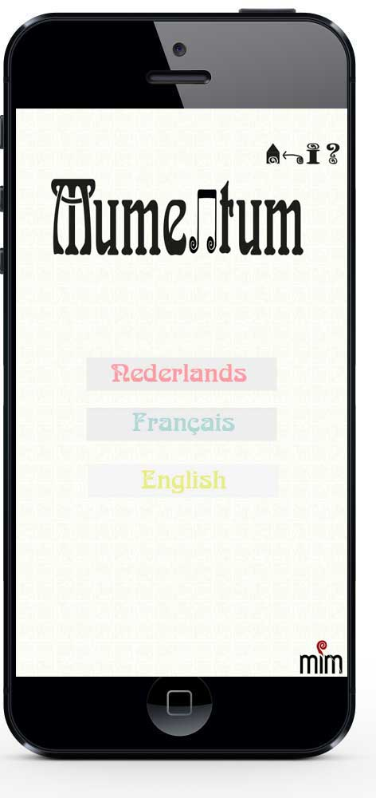
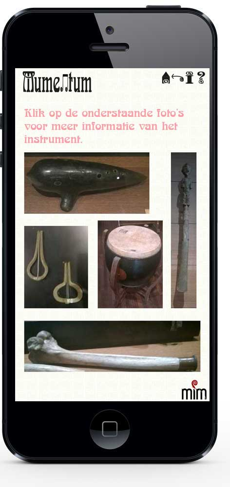
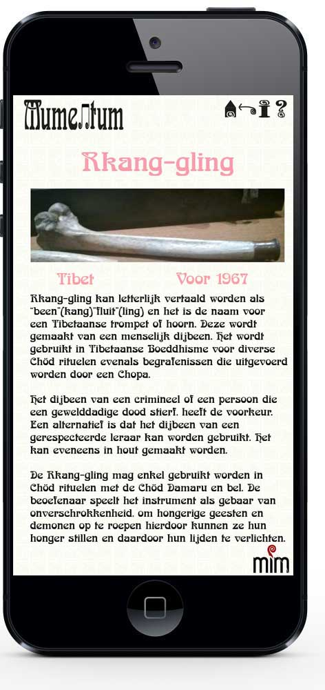

Ontstaan
Voor een schoolopdracht werd het muziekinstrumentenmuseum (MIM) in Brussel mij aangewezen om te onderzoeken. Na dit bezoek in samenspraak met andere bleek ons op te vallen dat er weinig informatie was over de instrumenten. Daarom heb ik besloten om een applicatie te ontwikkelen waar de bezoekers meer informatie kunnen opvragen.
De naam Mumentum komt door een combinatie te maken van delen uit het muziekinstrumentenmuseum. Mu komt uit muziek, ment uit instrument en um uit museum.
Uitleg demo
De applicatie is ontworpen in de drie meest voorkomende talen namelijk Nederlands, Frans en Engels.
Wanneer ze het startscherm krijgen, kunnen ze de taal kiezen waarin ze de applicatie willen gebruiken.Uiteraard als het toestel van het museum zou geüpgrade worden met de applicatie valt dit uiteraard weg.
Wanneer ze de taal gekozen hebben, kiezen ze op welke verdieping ze zitten. Op de gekozen verdieping komen alle instrumenten door middel van foto's tevoorschijn.
Zodra ze het instrument zien waar ze meer informatie over willen, klikken ze op die foto. Daar krijgen ze dan de naam, plaats, jaartal en de desbetreffende uitleg over het instrument.
Demo
De demo is uitgewerkt in de drie talen maar wel tot één instrument volledig om zo te laten zien wat het principe is.
De applicatie zou gedownload kunnen worden via de website van het MIM zelf. Het kan evengoed gedownload via Google Store of andere plekken.
Er is ook de mogelijkheid om de toestellen van het museum zelf te verbeteren met de applicatie en de geluidsfragmenten. Natuurlijk zijn er nog tal van andere mogelijkheden om de applicatie toe te passen in het museum.